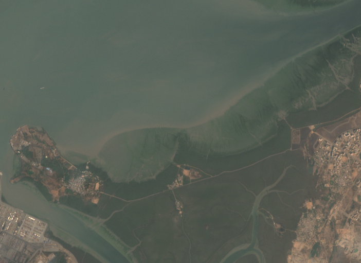
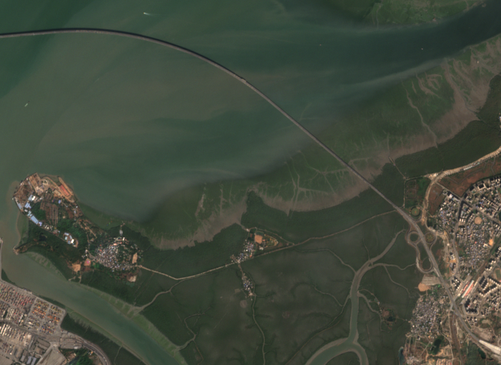

GRAH
SABOOT
Globe
New investigation
Sign in
Investigations
/
Atal Setu, Navi Mumbai approach
Atal Setu, Navi Mumbai approach
ROAD
8.0 KM
40 M WIDE
4 SECTIONS
1 JAN 2018 – 31 DEC 2025
Local draft
Save and verify
Report
Swipe
Side by side
Difference
Outline

22 FEB 2018
N↑
1 km
Sentinel-2B
· 10 m · 100% clear view
Details

12 DEC 2025
N↑
1 km
Sentinel-2B
· 10 m · 100% clear view
Details